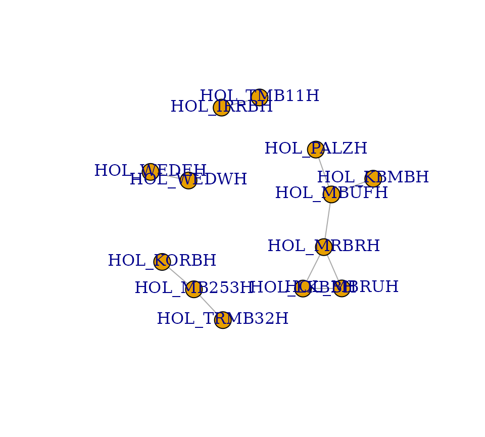
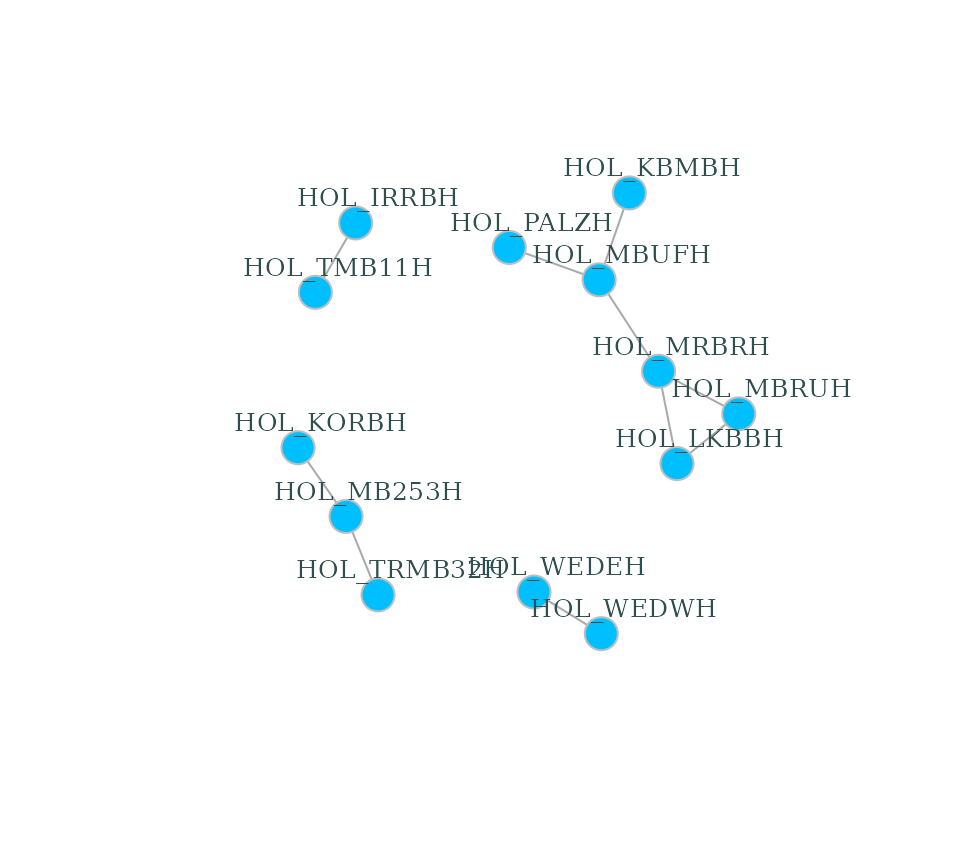

dendroNetwork is a package to create dendrochronological networks for gaining insight into provenance or other patterns based on the statistical relations between tree ring curves. The code and the functions are based on several published papers (Visser 2021, 2021; Visser and Vorst 2022)
Usage
The package aims to make the creation of dendrochronological (provenance) networks as easy as possible. To be able to make use of all options, it is assumed that Cytoscape (Shannon et al. 2003) is installed (https://cytoscape.org/). Some data is included in this package, namely the Roman data published by Hollstein (Hollstein 1980).
The first steps are visualized in the flowchart below, including community detection using either (or both) the Girvan-Newman algorithm (Girvan and Newman 2002) and Clique Percolation Method (Palla et al. 2005) for all clique sizes.
library(dendroNetwork)
data(hol_rom) # 1
sim_table_hol <- sim_table(hol_rom) # 2
g_hol <- dendro_network(sim_table_hol) # 3
g_hol_gn <- gn_names(g_hol) # 4
g_hol_cpm <- clique_community_names(g_hol, k=3) # 4
hol_com_cpm_all <- find_all_cpm_com(g_hol) # 5
# plotting the graph in R
plot(g_hol) 
# better readable version
plot(g_hol, vertex.color="deepskyblue", vertex.size=15, vertex.frame.color="gray",
vertex.label.color="darkslategrey", vertex.label.cex=0.8, vertex.label.dist=2) 
Visualization in Cytoscape
After creating the network in R, it is possible to visualize the network using Cytoscape. The main advantage is that visualisation in Cytoscape is more easy, intuitive and visual. In addition, it is very easy to automate workflows in Cytoscape with R (using RCy3). For this purpose we need to start Cytoscape firstly. After Cytoscape has completely loaded, the next steps can be taken.
- The network can now be loaded in Cytoscape for further
visualisation:
cyto_create_graph(g_hol, CPM_table = hol_com_cpm_all, GN_table = g_hol_gn) - Styles for visualisation can now be generated. However, Cytoscape
comes with a lot of default styles that can be confusing. Therefore it
is recommended to use:
cyto_clean_styles()once in a session. - To visualize the styles for CPM with only k=3:
cyto_create_cpm_style(g_hol, k=3, com_k = g_hol_cpm)- This can be repeated for all possible clique sizes. To find the
maximum clique size in a network, please use:
igraph::clique_num(g_hol). - To automate this:
for (i in 3:igraph::clique_num(g_hol)) { cyto_create_cpm_style(g_hol, k=i, com_k = g_hol_cpm)}.
- This can be repeated for all possible clique sizes. To find the
maximum clique size in a network, please use:
- To visualize the styles using the Girvan-Newman algorithm (GN):
cyto_create_gn_style(g_hol)This would look something like this in Cytoscape:

Usage for large datasets
When using larger datasets calculating the table with similarities
can take a lot of time, but finding communities even more. It is
therefore recommended to use of parallel computing for Clique
Percolation:
clique_community_names_par(network, k=3, n_core = 6). This
reduces the amount of time significantly.
The workflow is similar as above, but with minor changes:
load network
compute similarities
find the maximum clique size:
igraph::clique_num(network)-
detect communities for each clique size separately:
com_cpm_k3 <- clique_community_names_par(network, k=3, n_core = 6).com_cpm_k4 <- clique_community_names_par(network, k=4, n_core = 6).and so on until the maximum clique size
merge these into a single
data framebycom_cpm_all <- rbind(com_cpm_k3,com_cpm_k4, com_cpm_k5,... )create table for use in cytoscape with all communities:
com_cpm_all <- com_cpm_all %>% dplyr::count(node, com_name) %>% tidyr::spread(com_name, n)Continue with the visualisation in Cytoscape, see the previous section on visualization in Cytoscape
Citation
If you use this software, please cite this using:
Visser, R. (2024). DendroNetwork: a R-package to create dendrochronological provenance networks (Version 0.5.0) [Computer software]. https://zenodo.org/doi/10.5281/zenodo.10636310